Documentation
DW Question Answer is a WordPress Plugin which helps you build a Question & Answer system on your WordPress sites. The plugin is easy to install and set up. Let start building up your community with this WordPress question & answer system.
Installation
Automatic Installation
To automatic install DW Question & Answer plugin, you can using the built-in plugin installer:
- Login to your Administrator Panel.
- Go to Plugins > Add New.
- Under Search, type "DW Question & Answer" in the name of the WordPress Plugin.
- Click Install Now to install DW Question & Answer plugin.
- A popup window will ask you to confirm your wish to install the Plugin.
- If successful, click Activate Plugin to activate it, or Return to Plugin Installer for further actions.
For information on how to install DW Question & Answer plugin manually, see our manual installation guide below.
Manual Installation
There are a few cases when manually installing DW Question & Answer plugin is appropriate.
- If you wish to control the placement and process of installing DW Question & Answer plugin.
- If your server does not permit automatic installation of DW Question & Answer plugin.
- If you need to install a beta version of DW Question & Answer plugin.
To install DW Question & Answer plugin manually:
- Download DW Question & Answer plugin to your desktop.
- Login to your Administrator Panel.
- Go to Plugins > Add New.
- Select Upload tab, browse the DW Question & Answer plugin file.
- Click Install now to start uploading the file.
- If successful, click Activate Plugin to activate it, or Return to Plugin Installer for further actions.
Uninstalling
To uninstall DW Question & Answer plugin:
- Go to Plugins screen.
- Find the Plugin you wish to deactivate and uninstall.
- Under the DW Question & Answer plugin, Click Deactivate.
- The DW Question & Answer plugin will initate the deactivation.
Basic Config
Questions List
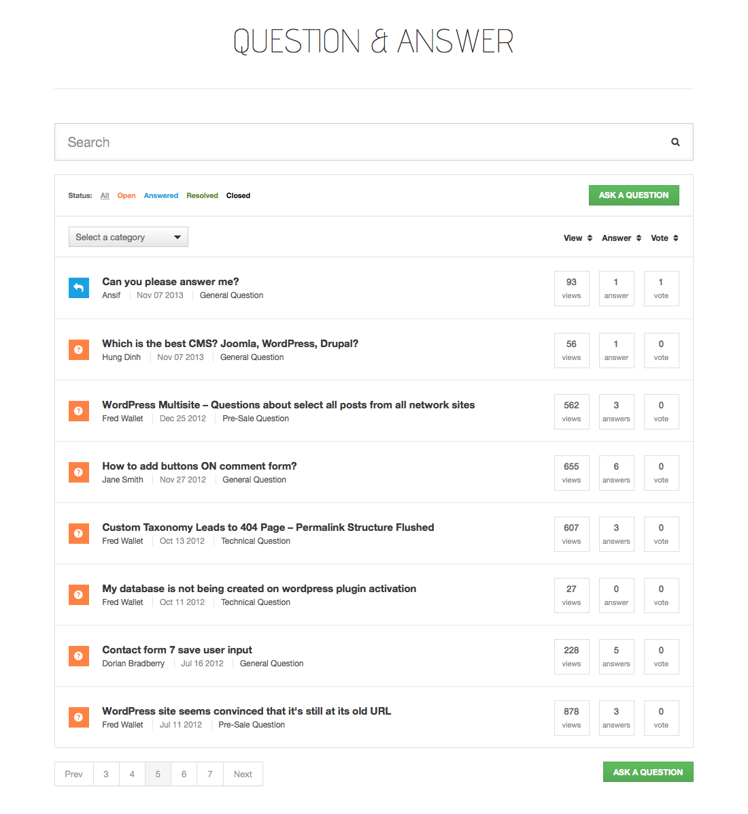To set up a page display all questions on your website, please follow our instructions here:
- Login to your Administrator Panel.
Go to Pages > Add New.
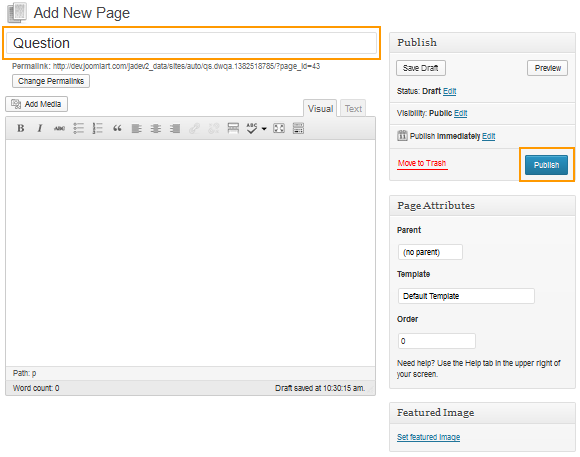Go to Dashboard > DW Q&A > Settings > General để chọn page mà bạn vừa tạo trở thành Questions List page.
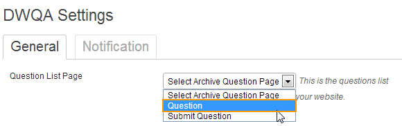Go to Appearance > Menus để hiển thị Question List page ra menu.
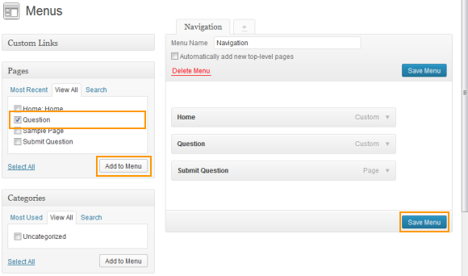
Ask Question
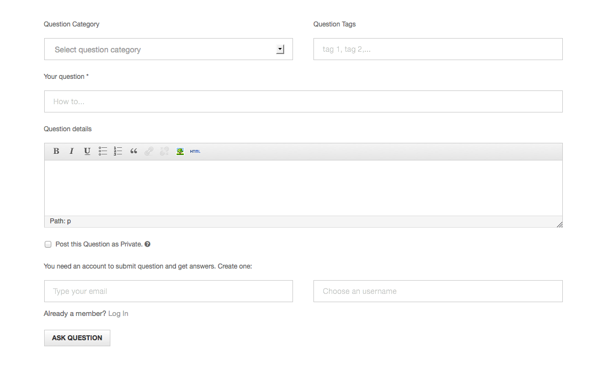To set up a page display all questions on your website, please follow our instructions here:
- Login to your Administrator Panel.
Go to Pages > Add New.
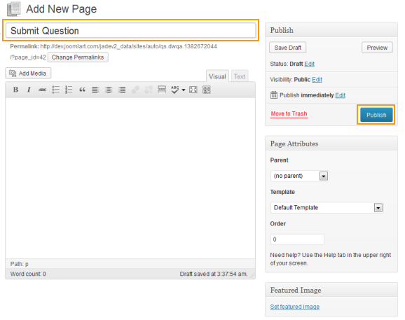Go to Dashboard > DW Q&A > Settings > General để chọn page mà bạn vừa tạo trở thành Ask Question page.
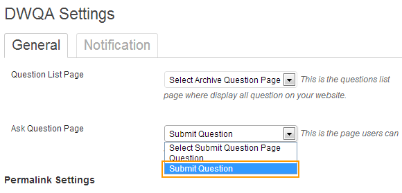Go to Appearance > Menus để hiển thị Ask Question page ra menu.
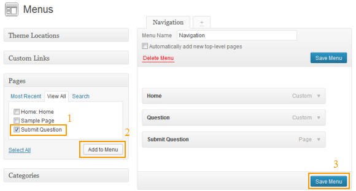
Time Frame
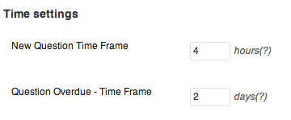Permalinks
Set up permalinks for your Single Question, Question Category and Question Tag
Go to Dashboard > DW Q&A > Settings > General.
See screenshot here:
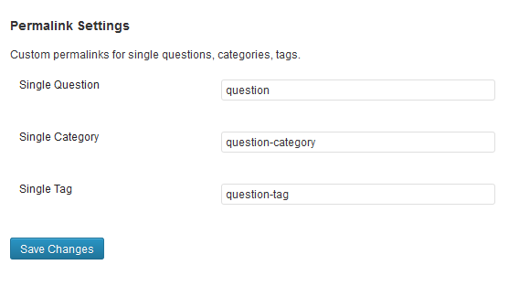Email Templates
There are 4 email templates you can customize the template:
To configure, log in to Dashboard > Questions > Settings > Notification
- New Question Notification: send out to Administrator regarding new questions posted
- New Answer Notification: send out to Question’s author regarding new answer posted
- New Comment to Question Notification: send out to Question’s author regarding new comment to question posted
- New Comment to Answer Notification: send out to Question’s author regarding new comment to answer posted
We already support a simple and clean style for email, simply Add your Logo and edit the content as you wish.

Permissions

Usage
Ask Question
Answer Question
Comment
Change Status
Filter Question
Search Question
Tutorials
Themes Integration
The DW Question & Answer plugin can work well on any WordPress site, however, in order to get the plugin fit well in the style, we will need to work on CSS a bit.
Step 1 Create the Q&A plugin’s template
Go to your theme folder, and create a new folder, named it dwqa-templates.
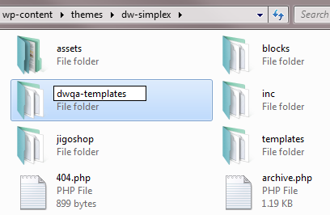
Inside your new folder, create 3 files: content-start-wrapper.php, content-end-wrapper.php, and style.css.
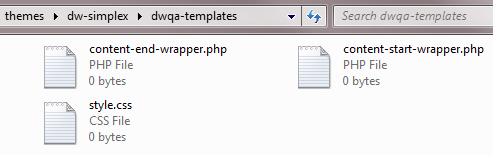
Step 2 Edit Content Wrapper files
Open up the landing page file of your theme (normally it’s page.php file in themes/[theme-name] folder) in notepad or any code editor, you can see this as a content wrapper of the webpage.
<header class="page-header"> <h1 class="page-title"><?php the_title(); ?></h1> </header> <div class="container-fluid"> <div class="entry-content"> <?php the_content(); ?> <?php wp_link_pages( array( 'before' => '<div class="page-link"><span>' . __( 'Pages:', 'dw-simplex' ) . '</span>', 'after' => '</div>' ) ); ?> </div> </div>
Now, based on the content wrapper of the theme, let’s add some code to our content-start-wrapper.php file, for example here:
<?php if( is_page() ) { ?> <header class="page-header"> <h1 class="page-title"><?php _e( 'Question & Answer', 'dw-simplex' ); ?></h1> </header> <?php } ?> <div class="container-fluid"> <div class="entry-content">
content-end-wrapper.php file:
</div> </div>
Step 3 Add custom style
The DW Question & Answer plugin includes three pages with unique class for each page as following:
- Question List Page (class: list-dwqa-question)
- Question Single Page (class: single-dwqa-question)
- Question Submit Page (class: submit-dwqa-question)
At this stage, you will need to work on CSS in order to style the plugin to fit your website. In the style.css file created in dwqa-templates folder, add the style you want for the plugin using defined class above:
/* In question list page */
.list-dwqa-question .page-header {
}
/* Single question page */
.single-dwqa-question .dwqa-container {
}
/* Submit question page */
.submit-dwqa-question .dwqa-container {
}
Final step: you need to load the custom style by adding the following code to wp-content/themes/[theme_name]/functions.php:
/* Load style for DW Q&A plugin */
if( !function_exists('dwqa_simplex_scripts') ){
function dwqa_simplex_scripts(){
wp_enqueue_style( 'dw-simplex-qa', get_stylesheet_directory_uri() . '/dwqa-templates/style.css' );
}
add_action( 'wp_enqueue_scripts', 'dwqa_hueman_scripts' );
}
Save and refresh your website to see the changes.
Translate Plugin
There are plenty number of Translation tools for WordPress which can help you to push up the process, you can take a look at WordPress translation Tools list. In our case we decide to use Poedit to edit .po file and generate .mo file
Step 1 Download and install Poedit if you don’t have any translation tool yet.
Step 2 Open Poedit, select File > New catalog from POT file on the main menu then navigate to the DW Question & Answer languages folder in the folder path /wp-content/plugins/dw-question-answer/languages/ and choose the "default.po" file.
Now, you will see a list of all the language strings you can edit.
Click on strings you want to translate and edit.
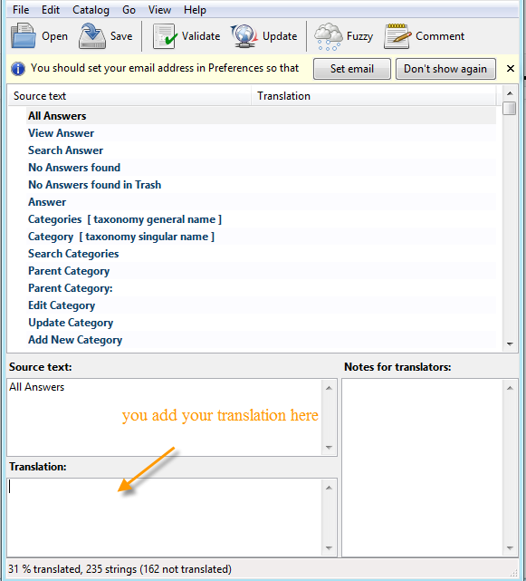
Step 3 Once done, go to File → Save as to save your translations in a .po file according to your language code.
For example, the language code for French is fr_FR, so you would save the translated file as dwqa-fr_FR.po.
If you don’t know your language code, you can find a list of language codes at WordPress in your Language.
Step 4 Set your Poedit to always compile a .mo file when saving changes by clicking File → Preferences and on the Editor tab check the "Automatically compile .mo file" :
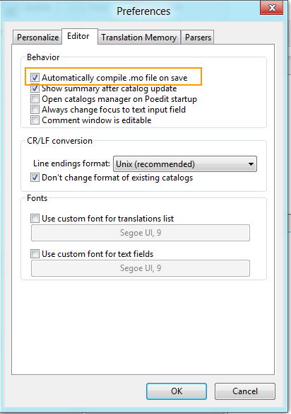
Then go to File → Save again to generate a .mo file.
Now, you have two separate files – a .po file and a .mo file as following:
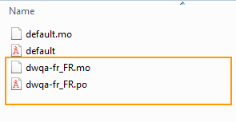
Step 5 Make sure that your wp-config.php file matches your language files.
For example, your language is French, you need to set your language in wp-config.php file by finding the following code:
define ('WPLANG', '');
and add the language code into it:
define ('WPLANG', 'fr_FR');
Save your wp-config.php file, upload it to your WordPress installation, and you are ready to go.